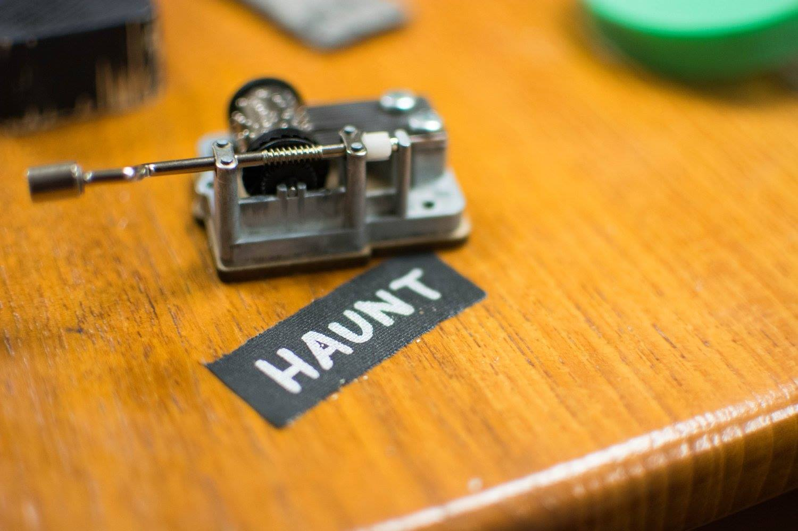
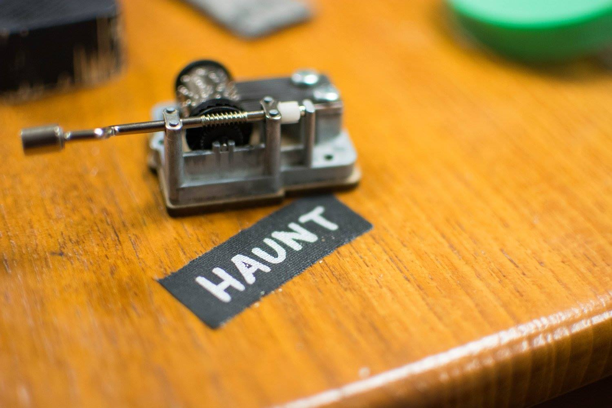
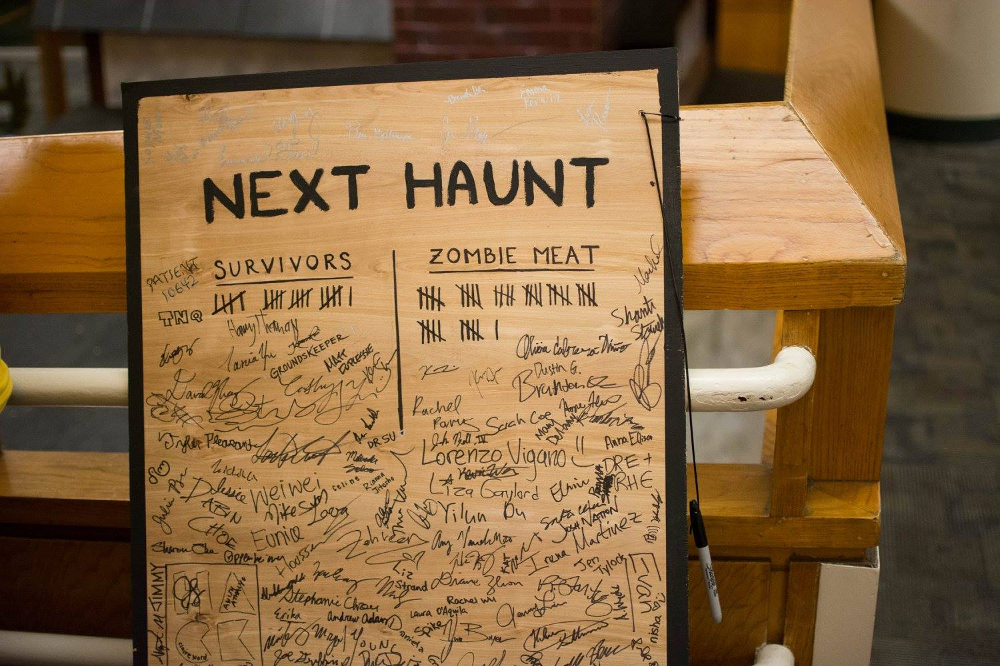

Next Haunt
Fall 2015 - When I was a freshman, I got involved with a new project called Next Haunt, a combination of haunted house and escape-the-room. We built a two-story wooden structure (complete with painted walls and roof) in the basement of our dorm right before Halloween. Teams entered the house and had to solve puzzles to escape while knowing that the undead was close behind them. I was a live actor (a spooooky zombie) my first year, and for my second year I returned as the lead puzzle designer.
The theme of Next Haunt 2016 was Escape the Haunted Asylum. Premise: You receive an invitation from a mysterious groundskeeper, who wants you to investigate his property. The building used to house a reputable asylum, but it has since fallen out of operation. Your task is to figure out what happened...
Teams were split up into two smaller groups at the beginning. Through teamwork, they were able to rejoin and explore the house for more clues. In the attic, they discovered a mad doctor, who was still shuffling around, trying to treat his patients. After reading through a patient book and realizing that unethical experiences had been conducted on the patients, the teams discovered the true horror: the doctor had inadvertently transformed his patients into zombies, and one of them was still in the house...
I led the puzzle design team, and we designed several puzzles that were thematically appropriate and interesting but also intuitive and simple to solve under potential duress. Our goal was to create puzzles that were more hands-on and interactive, and we wanted them to create a sinister atmosphere.
 

Hey, but some teams made it out alive!
 Photo credits: Clare Zhang, Ben Mattinson, John Chow